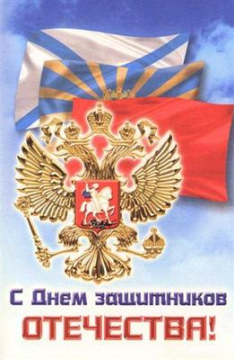

| Уважаемые ветераны Вооруженных сил, военнослужащие, коллеги, друзья!
Сердечно поздравляем вас с Днем защитника отечества!
В этот замечательный праздник мы с благодарностью вспоминаем тех, кто защищал Родину на полях сражений, отдаем дань их мужеству и героизму. Чествуем нынешних защитников отечества, всех, кто в труде, в повседневной жизни проявляет лучшие мужские качества – надежность, работоспособность, ответственность за свое дело.
Увековечение памяти павших героев, тех, кто пропал без вести в годы Второй Мировой войны мы считаем святым долгом и обязанностью перед их памятью, перед их родными и близкими, перед вступающими в жизнь новыми поколениями, которые необходимо воспитывать в духе патриотизма, уважения к человеческой жизни и истории своей страны. Именно на этом строится работа Фонда «Жить и Помнить».
Ежедневно в Фонд лично обращаются от 5 до 15 человек. В настоящее время в работе более 1000 обращений граждан и организаций, касающихся установления судеб воинов - фронтовиков. Всю работу по оказанию информационных услуг гражданам, обратившимся к нам, Фонд проводит на безвозмездной основе, за счет собственных средств.
За время работы Фонда найдены семьи более 300 воинов, погибших в лагерях военнопленных и концлагерях, которым переданы документы с описанием военной судьбы, места гибели и захоронения их родственников. По запросам жителей Твери, Тверской области, регионов России, граждан ближнего и дальнего зарубежья установлены места гибели и захоронения более 1150 воинов Великой Отечественной войны. По просьбам родственников, на основании документов (копий документов) внесено142 записи в электронную Книгу Памяти Тверской области, исправлено записей – 128.
Мы постоянно оказываем помощь госструктурам, местным администрациям, музеям, архивам, общественным организациям, общеобразовательным учреждениям, поисковым отрядам области и др. регионов России по вопросам военной истории и военно-мемориальной работы. В ходе подготовки к 65-й годовщине Победы Фондом проверены имена воинов, погребенных на 4 мемориальных воинских захоронениях Твери, Калининского и Максатихинского районов. За эту работу Фонд награжден почетной грамотой Главы города Твери, ответственный секретарь Фонда Александр Михайлович Терентьев - дипломом лауреата Форума «Общественное признание» Национальной Ассоциации объединений офицеров запаса Вооруженных Сил.
Фонд начал работу по сбору сведений о не учтенных воинских захоронений. В январе - феврале т.г. поступило 18 заявлений граждан о таких захоронениях. Наконец, Фонд выступил с инициативой: к 70 - летию освобождения г. Калинина выпустить уточненное и дополненное издание Книги Памяти воинов, погибших в боях за Калинин и выполнить часть работы по подготовке такого издания.
Я искренне благодарю всех, кто безвозмездно, по зову сердца помогает нам вести эту работу! Убежден, что только тогда, когда место захоронения и судьба каждого нашего солдата будут установлены, Тверь в полной мере будет достойна высоко звания – Город Воинской Славы. Мы делали и будем делать все, чтобы так и было.
Еще раз, с праздником! Желаю всем нам здоровья, энергии, благополучия и оптимизма!
Президент Фонда «Жить и Помнить» Леонид Мусин |